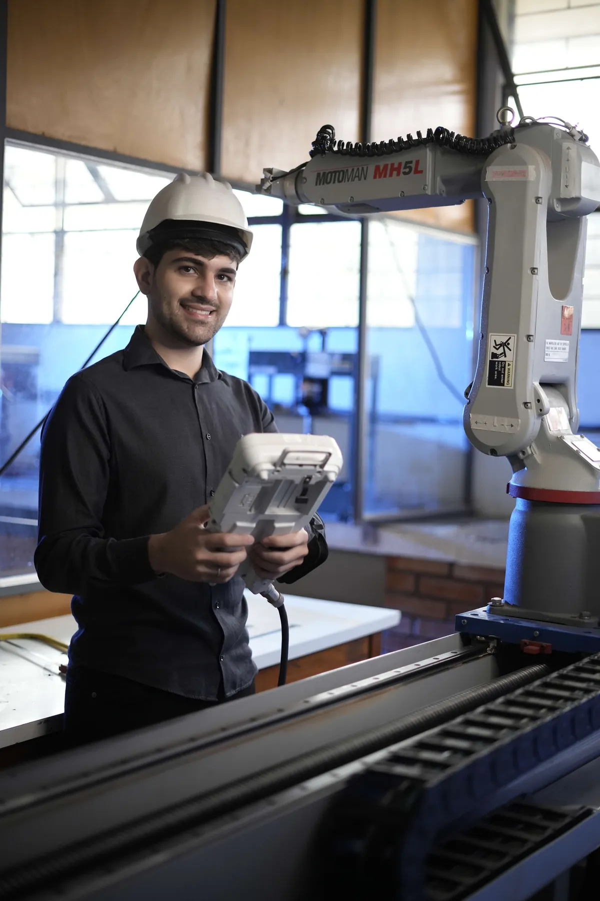

01
Dispositivos embarcados & IoT
Firmware confiável, sensores, atuadores e conectividade. Dispositivos que coletam dados no mundo físico e conversam com a nuvem — com baixo consumo e alta disponibilidade.
Engenheiro de Controle e Automação
especialista em dispositivos embarcados & IoT
Projeto sistemas de ponta a ponta — do firmware no microcontrolador à interface na tela, com inteligência artificial e segurança em cada camada.

// 01 — especialidades
Hardware, software, inteligência e segurança não são projetos separados. Eu trabalho na interseção — onde a maioria dos problemas reais acontece.
Firmware confiável, sensores, atuadores e conectividade. Dispositivos que coletam dados no mundo físico e conversam com a nuvem — com baixo consumo e alta disponibilidade.
Back-ends, APIs e integrações que fazem sistemas diferentes falarem a mesma língua. Dashboards, supervisórios e interfaces que tornam a operação clara e intuitiva.
Modelos aplicados a problemas concretos: visão computacional, previsão, detecção de anomalias e agentes com LLMs — da nuvem até a borda, perto de onde o dado nasce.
Segurança desde o projeto: do boot do dispositivo à API em produção. Análise de vulnerabilidades, hardening e proteção de ambientes de TI e OT industriais.
// 02 — ponta a ponta
Um projeto só funciona quando todas as camadas funcionam juntas. Por isso eu atuo em todas elas — e atravesso cada uma com IA e segurança.
// 03 — sobre
Sou Leandro Boari, engenheiro de Controle e Automação formado pela Universidade Federal de Lavras (UFLA), onde aprofundei e estruturei conhecimentos técnicos que já desenvolvia na prática. Minha formação consolidou uma maneira de resolver problemas: observar, medir, decidir e corrigir continuamente, seguindo o princípio dos Sistemas em Malha Fechada, nos quais a realimentação permite adaptar o sistema às mudanças e manter seu desempenho.
Essa filosofia orienta meu trabalho em automação industrial, IoT, integração de plataformas, inteligência artificial e segurança de sistemas. Acredito que a boa engenharia vai além de fazer algo funcionar: é desenvolver soluções confiáveis, capazes de se adaptar, evoluir e entregar resultados consistentes.
// malha fechada
Entender o cenário real antes de propor qualquer solução: dados, processos e pessoas.
Arquitetura pensada para o todo, com segurança como requisito — não como patch.
Do protótipo à produção: soluções que funcionam no laboratório e no mundo real.
Monitorar, medir de novo e ajustar. Projeto entregue não é projeto encerrado.
// 04 — contato
Projetos, consultorias ou só uma boa conversa sobre engenharia — minha caixa de entrada está aberta.
contato@leandroboari.com